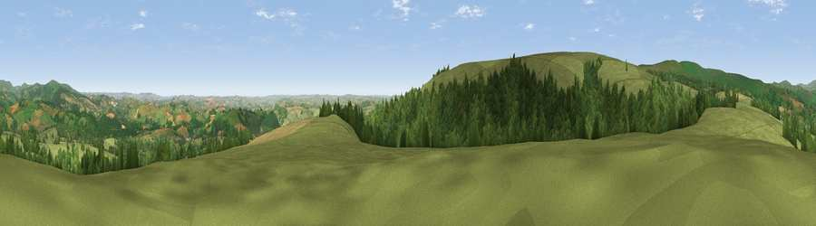

Wallaford Down
#4686 in England · top 10% of its area beats it · near CombeThe view, rendered

A 360° render of this exact spot computed from the terrain model, tree cover and land cover — summer colours, afternoon light, calibrated against photographs of famous viewpoints. Real trees, hedges and buildings will differ in detail.
The panorama
Grey silhouette: terrain skyline in each direction (720 bearings, Earth curvature and refraction included). Dashed green: skyline with trees (+15 m) and buildings (+8 m) as obstacles. Blue strip: how far the ground is visible on each bearing.
Where the view opens
Wedge length = distance to the farthest visible ground on that bearing (vegetation-aware). Rings at 10, 25 and 50 km.
What fills the view
61% grassland · 36% woodland · 3% cropland
Angular shares of the visible panorama (visual magnitude), not map area. Landscape diversity 0.35 (0–1 Shannon).
Key numbers
More beautiful places nearby
The staircase of upgrades: each row has a higher view potential than everything closer. Driving times are estimates from straight-line distance, calibrated against real road routing — check an actual route before setting out.
| Place | Direction | Drive | Score |
|---|---|---|---|
| Viewpoint near Combe | S · 1 km | ~3 min | 78.2 |
| Brent Hill | S · 4 km | ~10 min | 79.3 |
| Ugborough Beacon | SSW · 8 km | ~16 min | 79.5 |
| Viewpoint near Buckland in the Moor | NNE · 8 km | ~16 min | 80.7 |
| Western Beacon | SSW · 10 km | ~19 min | 81.9 |
| Viewpoint near Lee Moor | WSW · 15 km | ~27 min | 82.7 |
| Viewpoint near Stokeinteignhead | ENE · 22 km | ~37 min | 84.1 |
| Viewpoint near Hope | S · 27 km | ~43 min | 84.4 |
50.47836, -3.82562 · source: osm peak · position refined by local search. Computed location — check access rights before visiting.